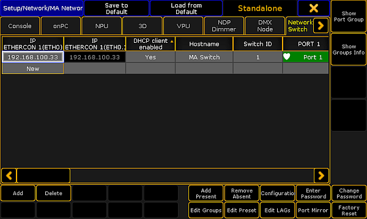

Open the MA Network Configuration.
- Press Setup, and tap under NetworkMA Network Configuration.
The MA Network Configuration window opens.
Tap at Network Switch.
MA Network Configuration - Network Switch
Tap and hold the cell in the column DHCP client enabled until Yes is displayed.
The DHCP client is enabled. The DHCP settings are saved in the startup configuration.

MA Network Configuration - Network Switch - DHCP yes
The column IP ETHERCON 1(ETH0) displays the used DHCP IP address. The column IP ETHERCON 1(ETHO.1) displays the default IP address of the MA Network Switch.
If DHCP is on, the MA Network Switch is reachable only with the DHCP IP address.
Hint:
You can also enable the DHCP client by using the command line.
- Change the destination of the command line to NetConfig/Network Switch 8. For more information see ChangeDest keyword.
- Type in the command line Assign 1 / DHCPclientenabled = "Yes".
The DHCP client of the NetworkSwitch 1 is enabled.